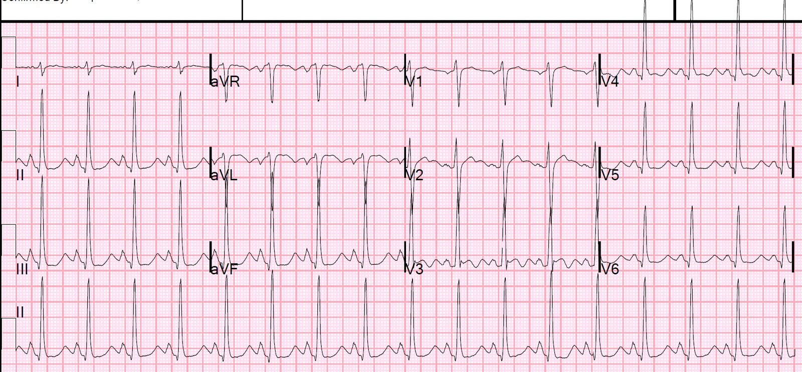
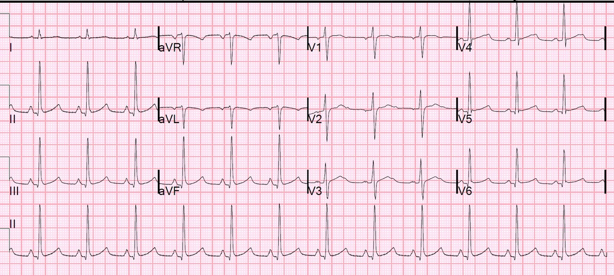
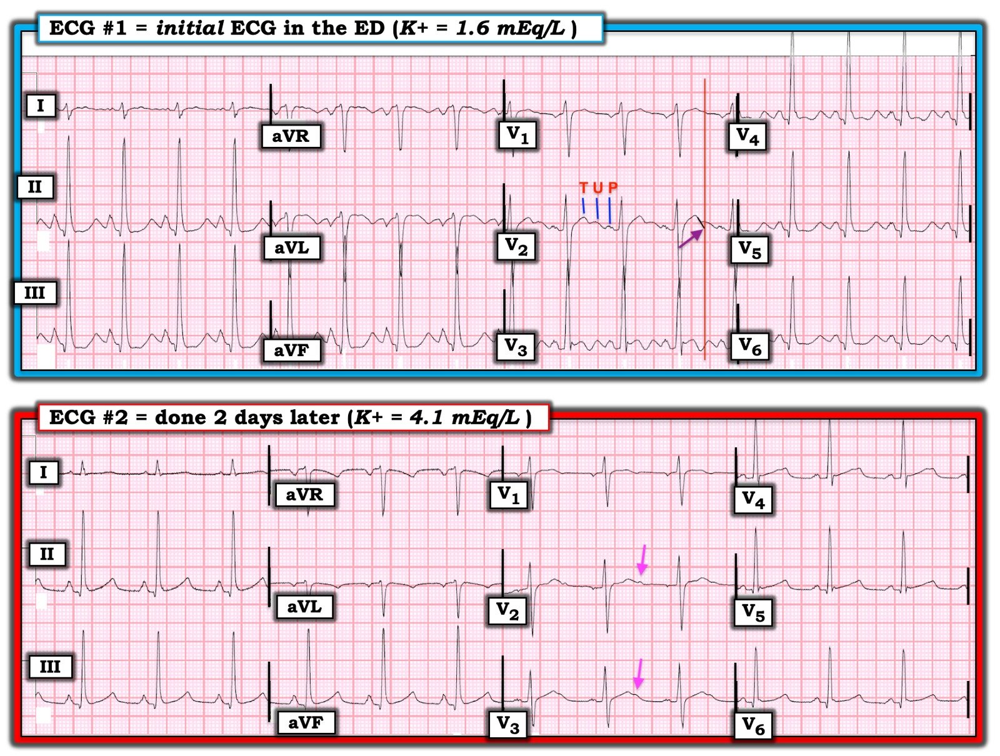
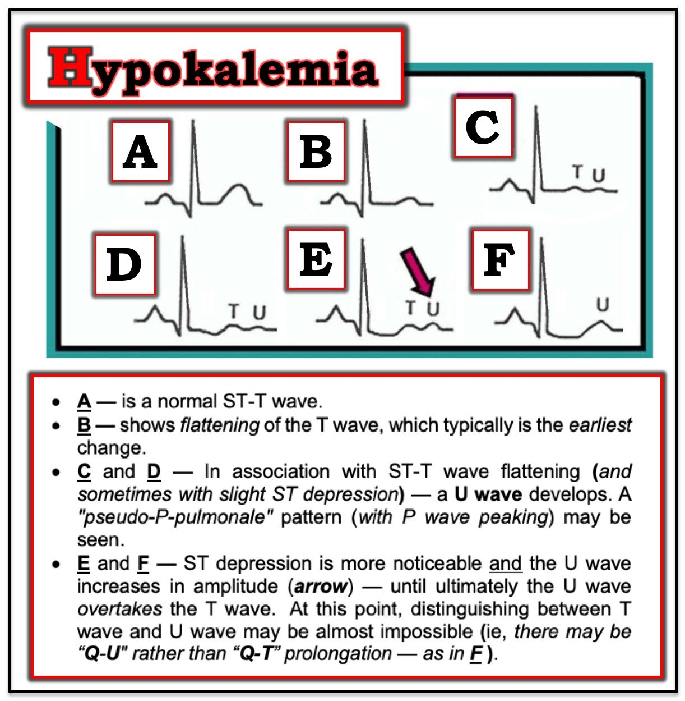

18/11/2019 — Động kinh liên tục. Điện tâm đồ này là dấu hiệu đặc hiệu chẩn đoán (pathognomonic) của bệnh gì?
Bản dịch tiếng Việt của bài "Taking control of severe hyponatremia with DDAVP" – Dr. Smith’s ECG Blog. Giữ nguyên toàn bộ 5 hình ảnh của bản gốc.
Bệnh nhân này đến viện trong tình trạng động kinh liên tục (status epilepticus).
Đây là điện tâm đồ:


Ở chuyển đạo V2, bạn có thể thấy rõ sóng T và sóng U tách biệt. Như vậy, bạn có thể thấy khoảng QT không thật sự dài. Thực ra, nó là 280 ms, tương ứng QT hiệu chỉnh theo Hodges là 350 ms.
Nhưng có sóng U nổi bật ở tất cả các chuyển đạo.
Ở nhiều chuyển đạo, bạn không thấy sóng T, mà CHỈ thấy sóng U: II, III, aVF và V4-V6. Cái mà bạn có thể nghĩ là khoảng QT thực ra là khoảng QU. (Nhưng khoảng QU dài cũng nguy hiểm)
Đây là dấu hiệu đặc hiệu chẩn đoán (pathognomonic) của hạ kali máu.
Kali máu là 1,6 mEq/L.
Dĩ nhiên đây không phải là một ca khó vì trong tình huống như vậy người ta luôn đo kali, nhưng ca này cho thấy kali đang ảnh hưởng rõ rệt đến hoạt động điện của tim.
Kết cục của ca bệnh
Natri máu là 109. Đây là nguyên nhân gây co giật.
Bệnh nhân được điều trị bằng nước muối ưu trương.
Thể tích tuần hoàn bị giảm, nên đã được bù lại.
Nhưng bù thể tích sẽ làm ngừng tiết hormon chống bài niệu, và cho phép bài tiết nước tự do, điều này có thể khiến natri máu tăng nhanh.
Vì vậy, bệnh nhân cũng được điều trị bằng DDAVP để điều chỉnh mức tăng natri máu và phòng ngừa hủy myelin cầu não trung tâm (central pontine myelinolysis).
Từ EMCrit:
Điện tâm đồ ghi 2 ngày sau, khi kali máu là 4,1:



===================================
BÌNH LUẬN CỦA TÔI, bởi KEN GRAUER, MD (18/11/2019):
===================================
RẤT NHIỀU điểm hay liên quan đến việc dùng điện tâm đồ trong bối cảnh rối loạn điện giải. Tôi chỉ giới hạn bình luận của mình ở một số điểm bổ sung cho những điểm Dr. Smith đã nêu — trong đó một vài suy nghĩ của tôi đưa ra một góc nhìn khác.
- Để rõ ràng — tôi đã đăng lại và đánh nhãn cả điện tâm đồ ban đầu ( = điện tâm đồ #1), lẫn bản ghi theo dõi được ghi 2 ngày sau ( = điện tâm đồ #2) sau khi đã điều chỉnh các rối loạn điện giải (Hình 1).


Hãy tưởng tượng bạn được đưa điện tâm đồ #1 — NHƯNG không có chuyển đạo V2.
- Chẳng phải sẽ khó hơn rất nhiều, rất nhiều để chắc chắn rằng có sóng U trong điện tâm đồ #1 nếu thiếu chuyển đạo V2 hay sao?
- Chẳng phải bạn sẽ nghĩ rằng bản thân QTc đã kéo dài? (thay vì một QTc khá bình thường theo sau là sóng U lớn)?
THÚ NHẬN: Tôi sẽ không biết chắc có sóng U trong điện tâm đồ #1 nếu không có chuyển đạo V2.
- Tôi ôn lại các thay đổi điện tâm đồ tuần tự của hạ kali máu trong Hình 2. Cần lưu ý rằng khi hạ kali máu ở mức độ nặng hơn — biên độ sóng U có thể tăng đến mức hòa lẫn với (và thậm chí vượt qua) biên độ sóng T. Khi điều này xảy ra, như ở hầu hết các chuyển đạo trong điện tâm đồ #1 — có thể khó (nếu không nói là không thể) phân biệt giữa sóng T với sóng U với sự hòa lẫn của cả hai.
Để rõ ràng — tôi đã đánh nhãn sóng T, sóng U và sóng P ở chuyển đạo V2 của điện tâm đồ #1. Tôi thấy cách TỐT NHẤT để nhận diện sóng U — là hiểu rằng khi có mặt, sóng U sẽ là sóng lệch dương nằm ở giữa sóng T và sóng P.
- LƯU Ý #1 — Sóng U không đặc hiệu cho hạ kali máu! Sóng U cũng có thể gặp ở bệnh nhân LVH và/hoặc nhịp chậm, hoặc đôi khi là một biến thể bình thường. Các chuyển đạo phía trước, như V2 và V3 — cũng như chuyển đạo II — thường cho thấy sóng U rõ nhất, dù sóng U có thể xuất hiện ở bất kỳ chuyển đạo nào.
- LƯU Ý #2 — Trong những trường hợp hiếm, sóng U có thể âm. Điều này thường khá khó nhận ra — nhưng việc phát hiện sóng U âm ở bệnh nhân đau ngực rất gợi ý thiếu máu cục bộ!
- LƯU Ý #3 — Theo kinh nghiệm của tôi, điện tâm đồ không quá đáng tin cậy để chẩn đoán hạ kali máu nhẹ đến vừa — vì cả độ nhạy lẫn độ đặc hiệu của các dấu hiệu điện tâm đồ đối với hạ kali máu chưa đến mức nặng đều tương đối thấp. Tuy nhiên, độ nhạy và độ đặc hiệu của chẩn đoán bằng điện tâm đồ đối với hạ kali máu nặng cao hơn nhiều, đặc biệt NẾU: i) bối cảnh lâm sàng “phù hợp” (và khiến bệnh nhân dễ bị hạ kali máu) — như ở bệnh nhân đang dùng thuốc lợi tiểu, hoặc đến viện vì Co giật (như đã xảy ra trong ca này); và, ii) khi sóng U trở nên lớn đến mức to hơn (hoặc gần to bằng) sóng T! Điều này tương tự Ô F trong Hình 2 — và tương tự hình dạng ST-T ở các chuyển đạo II, III, aVF và V4-V6 trong Hình 1, nơi các sóng U quá lớn đã hòa lẫn với phần cuối của sóng T ở các chuyển đạo này.
ĐIỂM THEN CHỐT (PEARL) #1 — Theo kinh nghiệm nhiều năm của tôi khi đối chiếu chặt chẽ nồng độ điện giải huyết thanh với hình ảnh điện tâm đồ — hạ magnesi máu gây ra các thay đổi điện tâm đồ gần như giống hệt hạ kali máu. Thiếu magnesi trong cơ thể thường gặp đi kèm với các rối loạn điện giải khác (tức là, hạ natri, kali, calci hoặc phospho); nhồi máu cơ tim cấp; ngừng tim; dùng digoxin/thuốc lợi tiểu; sử dụng và lạm dụng rượu; suy giảm chức năng thận.


Quay lại Hình 1 — Vậy, sóng T kết thúc ở ĐÂU trong chuyển đạo V2?
- Tôi đã vẽ một đường màu ĐEN ở cuối phức bộ cuối cùng của chuyển đạo V2 trong điện tâm đồ #1, đường này kéo dài theo độ dốc đi xuống của sóng T ở chuyển đạo này. Điểm mà đường ĐEN này chạm đường nền (mũi tên TÍM) — chính là điểm kết thúc của sóng T (đường thẳng đứng màu ĐỎ trong điện tâm đồ #1). Ở chuyển đạo V2 cần thấy rõ rằng phần khởi đầu của sóng U chồng lên phần cuối của sóng T ở chuyển đạo này.
- Về mặt thực tế — về lâm sàng, việc bạn có nhận ra (hay không) rằng QTc trong điện tâm đồ #1 là bình thường, nhưng nhiều sóng T trong bản ghi này đi kèm sóng U lớn chồng lên, là không quan trọng. Đó là vì NẾU bạn nhận ra có sóng U lớn trong điện tâm đồ #1 — bạn sẽ ngay lập tức nghĩ đến hạ kali máu là nguyên nhân khả dĩ. Nhưng ngay cả khi bạn không nhận ra có sóng U lớn lan tỏa trong điện tâm đồ #1 — bạn vẫn nên cân nhắc DANH SÁCH các Nguyên nhân Thường gặp gây QT kéo dài — bao gồm: i) Một số Thuốc; ii) “Điện giải” (tức là, hạ kali máu; hạ magnesi máu; hạ calci máu); và/hoặc iii) Thảm họa thần kinh trung ương (CNS) (tức là, đột quỵ, co giật, hôn mê, u, chấn thương, xuất huyết trong não hoặc thân não) — BẤM VÀO ĐÂY để xem cách áp dụng “Quan điểm của tôi” về những cân nhắc này.
Bạn CÓ Nhận thấy dấu hiệu điện tâm đồ KHÁC nào trong điện tâm đồ #1 không? Có một khuynh hướng quá phổ biến, ngay cả ở những người đọc giàu kinh nghiệm, là bỏ qua Cách tiếp cận hệ thống khi đọc điện tâm đồ ngay khi một bất thường đáng kể “đập vào mắt” họ từ bản ghi. BẠN lẽ ra phải ghi nhận các dấu hiệu điện tâm đồ bổ sung sau đây trong điện tâm đồ #1:
- Có nhịp nhanh xoang khoảng ~100 lần/phút trong điện tâm đồ #1. Điều này có ý nghĩa — vì chúng ta phải hiệu chỉnh cách tính QTc dựa theo tần số tim.
- Phức bộ QRS trong điện tâm đồ #1 rộng (tôi đo được 0,12 giây). Hình thái QRS không thật sự giống RBBB, LBBB hay blốc phân nhánh — nên tôi sẽ mô tả tình trạng QRS giãn rộng này là IVCD không đặc hiệu.
- Có trục QRS đứng trên mặt phẳng trán (khoảng +90 độ, do phức bộ QRS ở chuyển đạo I rất nhỏ nhưng đẳng điện ).
- Có tăng biên độ QRS ở nhiều chuyển đạo (tức là, đặt ra câu hỏi LIỆU bệnh nhân có thể có LVH?).
- Có sóng P nổi bật ở mỗi chuyển đạo thành dưới (sóng P ở thành dưới cao, nhọn và đỉnh sắc). ĐIỂM THEN CHỐT (PEARL) #2: Ngoài sóng U nổi bật và ST-T dẹt (nếu không nói là ST chênh xuống nhẹ) — một số bệnh nhân hạ kali máu xuất hiện hình ảnh “giả P phế” (Xem Ô D, E và F trong Hình 2). Tôi xin nhấn mạnh rằng hình ảnh sóng P cao và nhọn này không gặp một cách nhất quán — nhưng đôi khi, dấu hiệu điện tâm đồ này đã giúp tôi nghi ngờ hạ kali máu.
So sánh với điện tâm đồ #2: Tôi thấy thú vị khi so sánh điện tâm đồ ban đầu với điện tâm đồ #2, được ghi 2 ngày sau (sau khi các rối loạn điện giải đã được điều chỉnh).
- Bạn CÓ Nhận thấy rằng sau khi điều chỉnh điện giải huyết thanh — thời gian QRS đã trở về bình thường trong điện tâm đồ #2? Theo hiểu biết của tôi, QRS giãn rộng không phải là hậu quả của hạ kali máu đơn thuần. Điều này khiến tôi tự hỏi TẠI SAO QRS lại rộng trong điện tâm đồ #1? Đáng tiếc là chúng ta không biết đầy đủ chi tiết bệnh sử lâm sàng (tức là, các thuốc bệnh nhân có thể đang dùng, kết quả các chỉ số điện giải khác, như Ca++ huyết thanh và Mg++ huyết thanh) — nhưng có lẽ QRS rộng hơn đáng kể mà chúng ta thấy trong điện tâm đồ #1 phản ánh giai đoạn tiền xoắn đỉnh (và có lẽ xoắn đỉnh (Torsades de Pointes) thực sự đã xuất hiện nếu rối loạn điện giải không được nhận ra và điều chỉnh?).
- Các thay đổi điện tâm đồ khác — cần ghi nhận trong bản ghi theo dõi (điện tâm đồ #2) gồm: i) Tần số tim chậm hơn trong điện tâm đồ #2; ii) Kích thước sóng P nhỏ hơn trong điện tâm đồ #2 so với điện tâm đồ #1; iii) trục mặt phẳng trán đã trở về bình thường (hiện khoảng +75 độ); iv) ST thẳng đuỗn kèm chênh xuống nhẹ đã hết; và, v) điện thế QRS giảm. Cuối cùng — Lưu ý rằng có sự tách biệt ở các chuyển đạo V2 và V3 của điện tâm đồ #2 giữa điểm kết thúc sóng T và sóng U theo sau, vốn đã giảm kích thước đáng kể (mũi tên HỒNG). Tôi luôn thấy rất bổ ích khi quan sát sự tách biệt này của sóng T-U hòa lẫn khi chúng tiến triển trở lại thành sóng T riêng biệt và sóng U riêng biệt trong khoảng ~12-36 giờ điều chỉnh hạ kali máu/hạ magnesi máu. Trong ca này sẽ rất thú vị nếu được xem thêm vài điện tâm đồ liên tiếp nữa sớm hơn mốc 2 ngày sau.
Chúng tôi xin CẢM ƠN Dr. Smith vì ca bệnh bổ ích này!